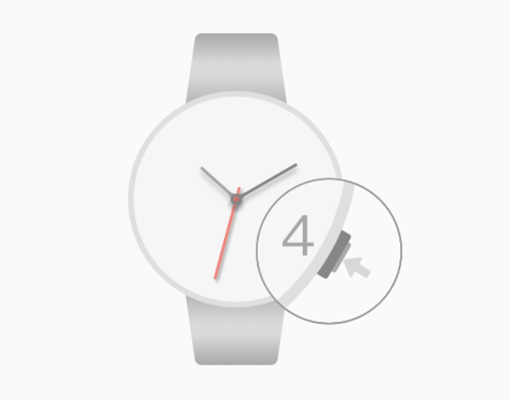

Afficher l'état: le cours en cliquant 4:00 obligations peuvent vérifier l'état de la connexion Bluetooth, 12:00 flashs lumineux indique deux fois que la montre n'est pas connecté au téléphone; 12: environ 00 lumières clignotent pendant deux secondes montre Description avec votre téléphone est connecté, si pas lumières ne clignotent pas indique que la fonction Bluetooth est pas ouvert

Bluetooth est activé: le noeud est en mode veille ou à l'état fermé, appuyez sur les touches 4:00 2 secondes ouverts。
Raccrochez: sous la surveillance et l'état de connexion téléphonique, en cas d'alertes d'appel, cliquez 4:00 obligations peuvent raccrocher le téléphone。
Caméra de contrôle à distance: un état de connexion sous la montre téléphone, appuyez sur les touches 4:00 2 secondes pour entrer le mode de prise de vue à distance, l'appareil photo, puis ouvrez le téléphone, appuyez sur la touche ou les bits 04:00 caméra contrôlable Fanwan。
Synchroniser automatiquement le temps de téléphone pour regarder, le pointeur de la montre se trouve inexact, la couronne peut être tirée, tourner les aiguilles des heures de réglage de la couronne et minute, petit cadran, comme une montre, la couronne est tirée 2:00 touches de numérotation pour la commande de petites pointeur de rotation, les heures, les minutes et les petits pointeurs pointent vers après 12h00, repoussant la couronne, le pointeur attraper automatiquement l'heure。
Foire aux questions：
●Après le temps de téléphone pour changer la montre ne change pas automatiquement le temps. L'application de téléphone au premier plan, attendez environ 10 secondes。
●Téléphone d'Apple est connecté, la télécommande n'a pas averti ou non de prendre des photos. Ou par téléphone Apple n'est pas jumelé avec Bluetooth. Ouvrez votre mode de vol de téléphone mobile, environ 10 secondes, puis arrêté. Reconnect existe toujours comme montres, 4:00 appuyer sur les touches redémarrent au moins 7 secondes montres。
●Regardez le téléphone Android est connecté mais pas associé. Redémarrez le téléphone recherche de connexion Bluetooth à nouveau。
●Vous ne pouvez pas prendre des photos de la télécommande et regarder paire téléphones Android. Entrez les détails de l'appareil Bluetooth, vérifiez si le dispositif est un dispositif d'entrée, tel que vérifié, ouvrez l'appareil photo du téléphone, le bouton de la caméra pour changer le téléphone ou appuyez sur les touches de volume pour contrôler la caméra. (Part des modèles Android ne prennent pas en charge les périphériques d'entrée.)
●Les téléphones Android ont même pas regarder un rappel. Vérifiez l'appel téléphonique application de rappel, un message rappelant commutateur est activé, ajouter un téléphone dans l'application de votre téléphone listera confiance (partie d'assistant de sécurité mobile protégerai), vérifiez la barre de notification téléphonique pour rappeler le commutateur est tourné vers l'application téléphone。
●D'autres anomalies, comme la lampe ou le scintillement continu Bluetooth allumé sans interruption. Montre de presse 4:00 au moins 7 secondes clés redémarrent montres, opération d'ouverture de couverture montre est invalide appuyez sur le bouton de remise à zéro。